org.eclipse.compare.core plug-in
that can be used by headless Eclipse applicationsFor backwards compatibility reasons, existing subclasses of FilteredTree
will not get the new look automatically. Clients of the FilteredTree
are encouraged to switch to the new look as recommended in the
porting guide.
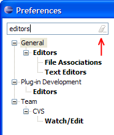
TableViewer and
TreeViewer has been extended to allow multiple fonts within cells. For example, this can be used to
highlight matching text in search results using a bold font.
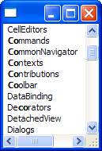
SWT.SHEET, new API has been added to MessageDialog
and MessageDialogWithToggle so that clients can set the appropriate style for their dialogs.
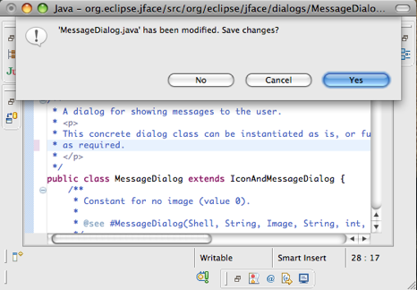

ICheckStateProvider, that can be used to
manage the checked and gray states of elements in CheckboxTableViewer or CheckboxTreeViewer
objects. This is useful in situations where the viewer should come up with pre-checked
elements, or when the check state changes are not always triggered by the user.
AlwaysWelcomeCheckbox as a content provider.
The example below shows this checkbox added to the What's New page.
org.eclipse.help.webapp.contentFilter
allows for pre-processing of help content before it is delivered from the help server.javax.servlet API, replacing the 2.4 version in the Ganymede release.
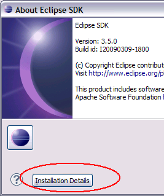
Pushing this button will launch a dialog that shows all of the installation pages contributed by plug-ins in a single Installation Details dialog. Plug-ins may contribute installation pages and define buttons that operate on the information in the installation page.
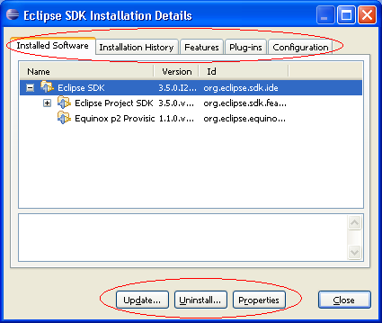
The new extension point is org.eclipse.platform.ui.installationPages. Example implementations can be found by browsing the hierarchy of org.eclipse.ui.about.InstallationPage.
org.eclipse.ui.intro/INTRO_THEME=org.eclipse.ui.intro.universal.slate. The main differences in the root page between the new
theme and the two existing themes are:
- Each link has a label.
- The images are transparent and will display well if a background is added using an extension.
- The page displays well at high screen resolutions.
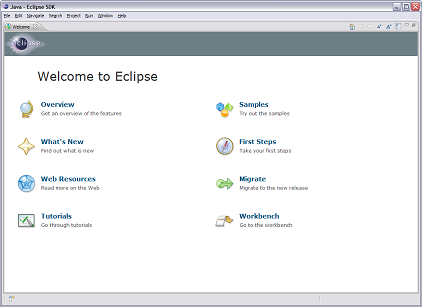
Non root pages also have a label for each link.

DebugOptions API has been enhanced
to support dynamic changes to option settings. Now debug option settings can be modified while
an application is running to facilitate problem determination and support. A new interface,
DebugOptionsListener, can be registered as a service to enable your plug-in to
respond to dynamic debug option changes.
org.eclipse.osgi.service.debug.DebugTrace,
has been added to enhance and simply writing of debug trace messages in your code.
The DebugTrace object will take care of writing additional trace information along
with your message, such as your bundle symbolic name, and the class, method, and line
in which the tracing message was written. This reduces clutter in the code being traced, while ensuring
that consistent and complete contextual information is recorded. The tracing data can
either be directed to a file, or written on stdout, depending on the setting of DebugOptions#setFile.
By default the Eclipse platform will write trace data to the file trace.log in the workspace
metadata location (next to the platform log file).
The Service Hooks Specification is targeted at bundles which need to observe and react to selected service layer operations. In general these will be highly specialized bundles written by systems programmers. The service hooks are not intended to be used by so-called "normal" application bundles. For more information see the OSGi Release 4 Version 4.2 specification.
- The Java-SE Service Provider Configuration model.
- Get it from some configuration and use Class.forName.
- Hardcode the factory name.
org.eclipse.osgi.launch.EquinoxFactory class is the public
class in Equinox which implements the new
org.osgi.framework.launch.FrameworkFactory interface.
This Release 4, Version 4.2 specification also defines standard configuration properties which all framework implementations must recognize. This allows for a generic framework launcher to be implemented that can launch any framework implementation. For more information see the OSGi Release 4 Version 4.2 specification.
- The definition of the
Service-Componentheader now uses the definition of a header from the module layer. It also allows wild-cards to be used in the last component of the path of a header entry. - The DS runtime now follows the recommendations of Property Propagation and does not propagate properties whose names start with '.' to service properties.
- The component description now allows for a configuration policy to control whether component configurations are activated when configuration objects are present or not.
- The component description now allows the names of the activate and deactivate methods to be specified. The signatures of the activate and deactivate methods are also modified.
- Additional signatures of the bind and unbind methods have been added.
- The definition of accessible methods for activate, deactivate, bind and unbind methods is expanded to include any method accessible from the component implementation class. This allows private and package private method declared in the component implementation class to be used.
- The XML schema and name space have been updated to v1.1.0. It now allows for wild-carded attributes and elements for extensibility. The name attribute of the component element is now optional and the default value of this attribute is the value of the class attribute of the nested implementation element. The name attribute of the reference element is now optional and the default value of this attribute is the value of the interface attribute of the reference element. The Char type for the property element has been renamed Character to match the Java type name. The attributes configuration-policy, activate and deactivate have been added to the component element.
- When logging error messages, SCR now uses a
LogServiceobtained using the component's bundle context so that the resulting log entry is associated with the component's bundle. - Target properties are now component properties that can be set wherever component properties can be set, including configurations.
For more information see the OSGi Release 4 Version 4.2 specification.
- org.osgi.framework.Bundle#getVersion()
- Returns the Version of a bundle.
- org.osgi.framework.Bundle#getSignerCertificates()
- Returns the signers of a bundle.
- org.osgi.framework.BundleException#getType()
- Returns the error type for a BundleException. For example, a resolver error.
- org.osgi.framework.BundleReference
- Interface which must be implemented by bundle classloaders. This gives clients the ability to determine what bundle a ClassLoader is for.
- org.osgi.framework.Constants
- A number of new constants have been added to define standard launching configuration properties.
- org.osgi.framework.FrameworkEvent
- A number of new FrameworkEvent types have been added give launchers standard notification when a framework is stopped or restarted.
- org.osgi.framework.FrameworkUtil#getBundle(Class)
- Utility to get a Bundle object for a given class. A static method equivalent to the PackageAdmin#getBundle(Class) method.
- org.osgi.framework.FrameworkUtil#matchDistinguishedNameChain(String, List)
- Utility to match a certificate chain against a pattern. This is used for permission and condition checks against signed bundles.
- org.osgi.framework.ServiceEvent
- A new ServiceEvent type has been added to indicate the properties of a registered service have been modified and the new properties no longer match a listener's filter.
- org.osgi.framework.ServiceException
- A new ServiceException type has been added to indicate that a service problem occurred.
- org.osgi.util.tracker.BundleTracker
- The BundleTracker class simplifies tracking bundles much like the ServiceTracker simplifies tracking services.
Conceptually a composite bundle is composed of
a set of bundles which are contained in another (nested) framework instance.
New API is introduced in the org.osgi.service.framework package to
manage composite bundles. The CompositeBundleFactory service interface is
used to install composite bundles. The CompositeBundle interface is used to
manage the bundles which compose a composite bundle.
For more information see the OSGi Release 4 Version 4.2 specification.
Note: The API introduced in the org.osgi.service.framework package
is a proposed OSGi API. This API is considered provisional in Equinox and
may change drastically or be dropped altogether in a future release of
Equinox. We encourage use of the API and any feedback on the
specification, but consumers must be aware that breaking changes may occur
in a future release.
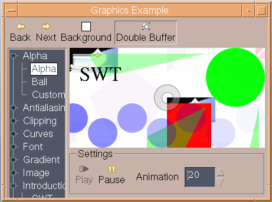
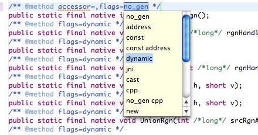
StyledText can be switched into block selection mode with new API StyledText.setBlockSelection(true).
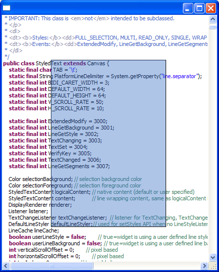
Browser widget.
Supported types are numbers, booleans, strings, null, and arrays (example
snippet).
StyledText to allow you to listen for changes in the caret offset.
See StyledText.addCaretListener() and StyledText.removeCaretListener() for more information.
StyledText to demonstrate how it can be
used to create a multi-font rich text editor with bullets, links and embedded objects.
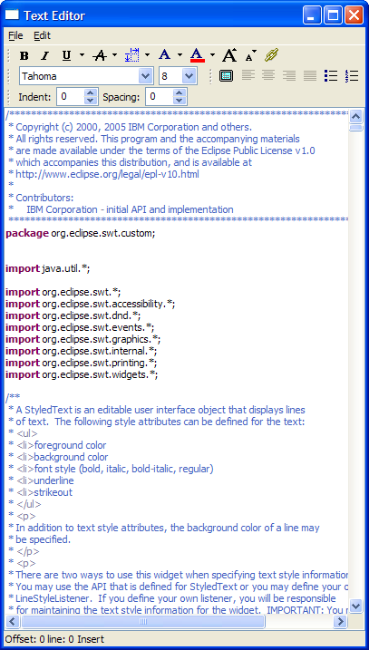
SWT.SEARCH style is now supported on
all platforms, allowing the application to display a text message when
the control is awaiting input. The SWT.ICON_SEARCH and
SWT.ICON_CANCEL hints control the appearance of the search field (example
snippet).
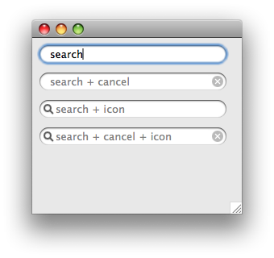
FileTransfer
class to allow for copy/paste operations between the Explorer and
the Nautilus file manager.
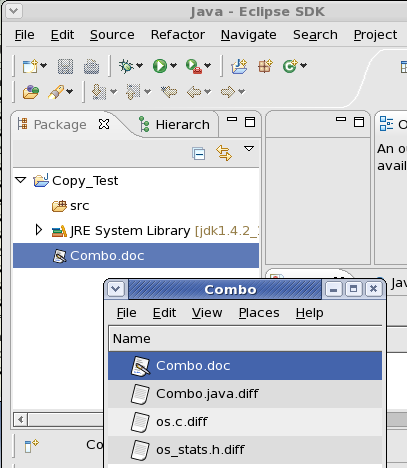
StyledText now allows users to add
hyperlinks to the text in the widget.
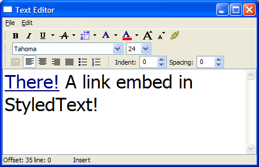
StyledText to set margin spacing and color.
See Snippet316.
Browser.setJavascriptEnabled(boolean).
Browser.setCookie() and Browser.getCookie().
Shell to provide a user hint that the window is in a modified state.
See Snippet314.
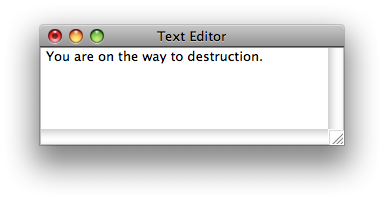
DateTime widgets created with SWT.DATE style can now also have SWT.DROP_DOWN style.
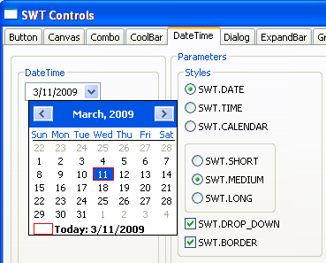
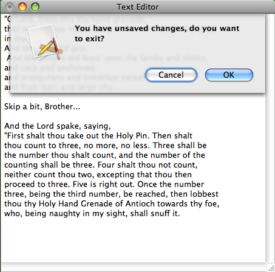
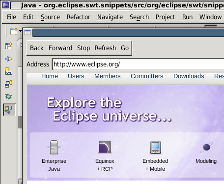
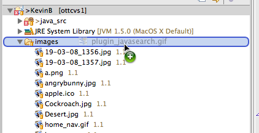
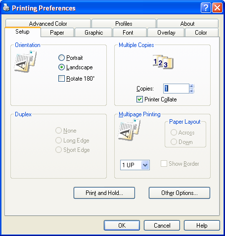